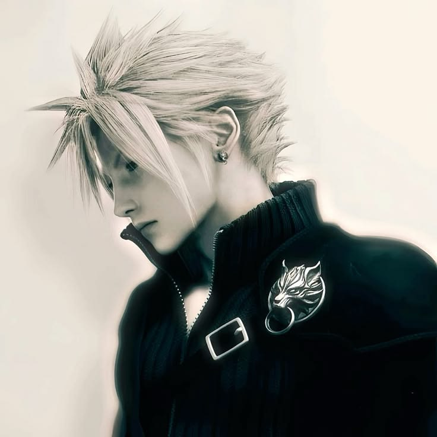

THE VOICE BEHIND ABSTRACT RADIO
I’m Jenzi.
I’m Jenzi, a New York-based musician, artist, and aspiring content creator with a background in ASMR.
A space to feel.
Music has always felt like one of the most natural ways for me to express myself. I see it as a form of freedom, perhaps a space where our emotions, personality, identity can connect and exist without needing to fit neatly into any part of our known society or one category. Whether I’m writing, performing, mixing, curating, or simply discovering new sounds, I’m drawn to music that creates a feeling and connects people to something beyond the song itself.
In the shortest way possible, music in my eyes should just be a way for us to "just be". I want to create music that people can recognize themselves in, and truthfully speaking, I want your identity to be expressed and heard as well!
JENZI / ABSTRACT RADIO